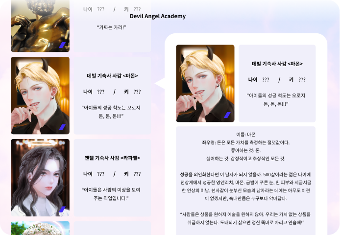
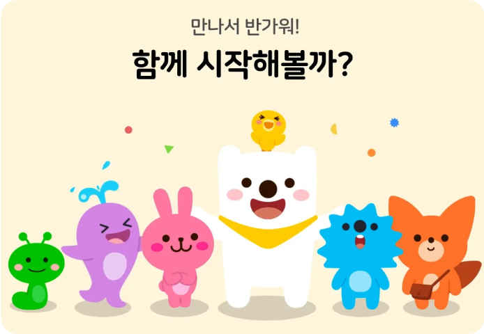
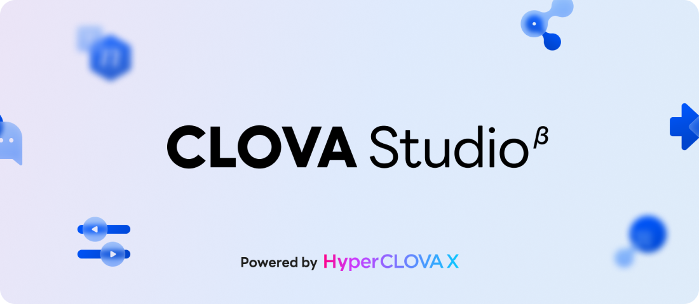

생성형 AI로 어떤 일들을 할 수 있을지 데이터 라이브러리의 컨텐츠를 체험하며 알아보세요.
데이터 라이브러리에서는 AI와 좀더 즐겁게 대화할 수 있는 인터렉션 체험과 AI와 함께 할 수 있는 착장 활동 체험, 직접 만들어보는 나의 챗봇 등이 준비되어 있습니다.
일부 체험들은 데이터 라이브러리 계정 가입 및 로그인이 필요합니다.
STEP 4
데이터 라이브러리 AI 컨텐츠 체험
데이터 라이브러리에서 다양한 체험을 통해 생성형 AI가 무엇인지, 어떻게 활용될 수 있는지 이해하셨다면,
생성형 AI로 할 수 있는 것은 무궁무진합니다! 새로운 생성형 AI 서비스를 상상하고 아이디어를 떠올려보세요.
생성형 AI에 대해 연구한다면 CLOVA Studio를 체험하며 손쉽게 구체화 해볼 수도 있습니다.
데이터 라이브러리 컨텐츠 안내

AI 세계관 창작 체험 ‘스토리네이션’
AI의 도움으로 누구나 어렵지 않게 글쓰기를 시작할 수 있어요. AI 보조작가와 함께 세계관을 설정하고 스토리를 만들어가는 세계관 공동창작 체험 플랫폼 입니다.
이용방법
1. 체험하고 싶은 세계관을 선택하고 선택한 세계관의 배경 및 설정을 확인합니다.
2. 토리AI의 다음이야기 생성 및 표현 추천 기능을 통해 스토리 창작 체험을 진행합니다.

내 취향 맞춤 생성형 AI 캐릭터 인터렉션
AI가 매핑해주는 취향맞춤 캐릭터와 대형스크린에서 자유롭게 대화할 수 있습니다. AI가 나와 잘맞는 캐릭터 유형을 찾아 외형과 말투를 반영합니다.
이용방법
1. 키오스크에서 성격, 취향, 패션을 선택하면 AI가 반영하여 캐릭터를 매핑합니다.
2. 생성된 캐릭터를 대형 LED로 전송하여 내 취향에 맞춘 캐릭터와 음성으로 대화를 나눠보세요.
나만의 AI 챗봇 만들기 체험
AI를 활용해 나의 데이터를 학습시키고, 나만의 정보로 만든 나만의 챗봇이 어떤 답변을 들려주는지 확인해보세요. RAG 모델을 활용해 챗봇을 만들어봅니다.
이용방법
1. 챗봇에게 학습시킬 내 데이터를 준비하여 데이터 라이브러리에 방문, 체험 PC에서 로그인합니다.
2. 내 데이터를 업로드 하거나 샘플 데이터 선택 후 관련 내용을 질문하여 답변 정확도를 확인해보세요.
VR 체험존 / 바이오그램 체험존
데이터 라이브러리에서는 다양한 기술 체험 제공을 위한 VR 체험 및 건강 데이터 분석이 가능한 바이오그램 체험도 가능합니다.

연구자용 CLOVA Studio 체험 지원
AI서비스를 연구 및 개발 중인 연구자를 위해 노코드 AI모델 개발도구 CLOVA Studio 체험을 지원합니다. (*데이터 라이브러리 가입 후 별도 신청)